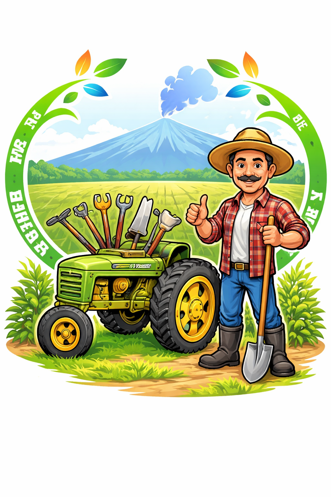

🌾 Amendement
Améliorer la production de votre plantation avec des techniques d'amélioration.
Améliorer →✨ Recommandation de culture
Système de recommandation de culture avec le machine learning.
Recommander →
Améliorer la production de votre plantation avec des techniques d'amélioration.
Améliorer →Système de recommandation de culture avec le machine learning.
Recommander →